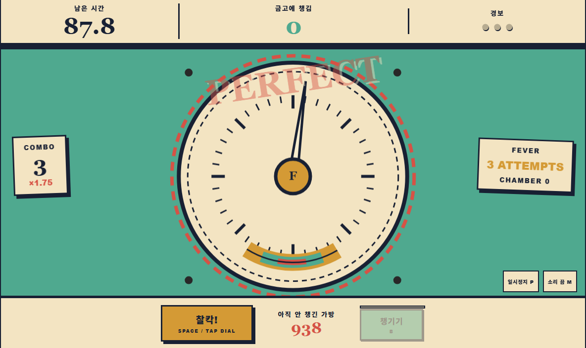
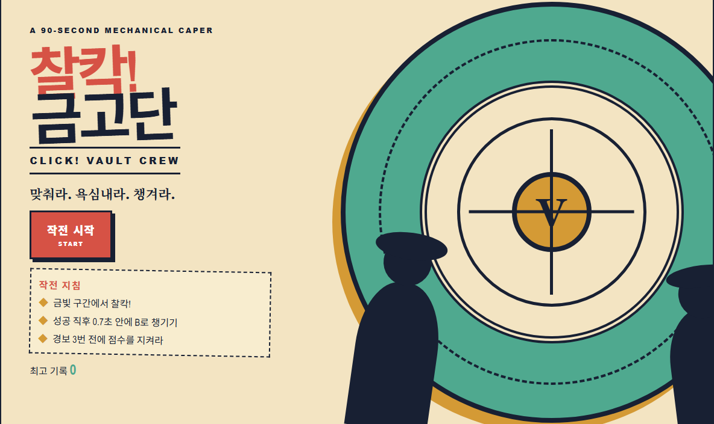

키보드와 포인터
Space 또는 화면 버튼으로 다이얼을 멈추고, 성공 직후 B 또는 챙기기 버튼으로 안전하게 점수를 확정합니다.
GAME 07 90-SECOND MECHANICAL CAPER
회전하는 금고 다이얼을 정확히 멈추고, 0.7초의 결정 창마다 전리품을 챙길지 더 큰 배수를 노릴지 선택하는 점수 게임입니다.
PLAY PUBLIC WEB BUILD →
01 · MECHANICS
GOOD, GREAT, PERFECT 타이밍 판정이 점수와 배수를 올립니다. 다섯 번 연속 성공하면 금고실 보너스가 열리고, PERFECT 세 번은 다음 세 번의 시도를 강화하는 FEVER를 준비합니다. 실패하면 미수금과 콤보를 잃고 세 번째 경보에서 작전이 끝납니다.
Space 또는 화면 버튼으로 다이얼을 멈추고, 성공 직후 B 또는 챙기기 버튼으로 안전하게 점수를 확정합니다.
외부 이미지 없이 HTML, CSS와 Canvas 2D로 그린 1960년대 기계식 케이퍼 포스터 미학입니다.
02 · SCREEN

03 · SCOPE
정적 싱글 플레이 에디션으로 공개했습니다. Canvas 2D 그래픽과 합성 Web Audio를 포함하며, 소스 프로젝트에서 관찰한 자동화 테스트 결과는 18/18 통과입니다.